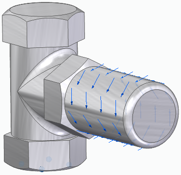
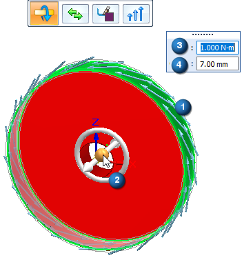
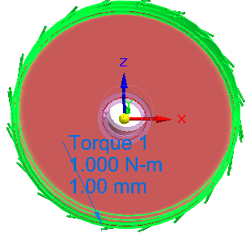

Torque load
Applying a load as a boundary condition in a generative design study is part of the Generative Design workflow.
Use the Generative Design tab→Loads group→Torque command to apply a turning force to one or more cylindrical faces about an axis of rotation.

You can use a torque load along with a pinned constraint to define the forces on a door knob. The pinned constraint defines the axis of rotation, and the torque magnitude defines when the knob is expected to break.
Torque load inputs
Torque loads require the axis about which the torque load is applied, the direction of rotation, the torque magnitude value, and the offset volume.
-
Geometry—The cylindrical faces on which to apply the torque load.
-
Rotation axis—Orient the steering wheel so that the torus of the steering wheel is aligned with the rotation axis of the selected elements.
-
Load direction—The load symbols indicate the default direction of rotation. Press F on the keyboard or click the Flip Direction button on the command bar to reverse the direction
-
Value—Torque magnitude.
-
Offset volume—This is the additional amount of material to keep where the load is applied. This prevents all material from being removed during optimization. The Offset value that is displayed as a default is the recommended value based on the volume of the design space and the study quality.

Editing a torque load
The load symbols are added to the selected geometry in the design space, and an edit definition handle is shown on the design body, with a label such as Torque 1. You can use this handle to edit the inputs that created the load.

A corresponding entry is added to the Generative Design pane, under the Loads node, as Torque 1.
-
To review the values assigned to the load, hover over the label name in the Generative Design pane, or click the label to display the handle on the body.
-
To edit the load, double-click the label in the Generative Design pane, or click a displayed handle on the body.